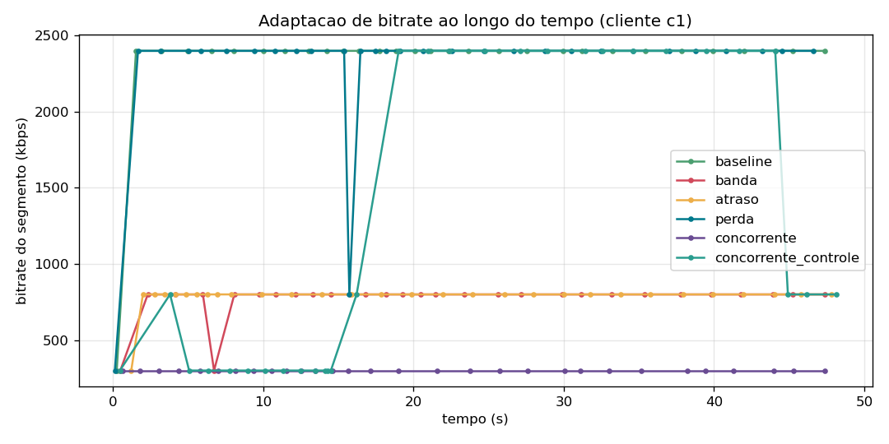
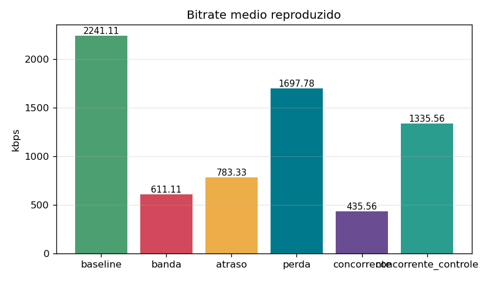
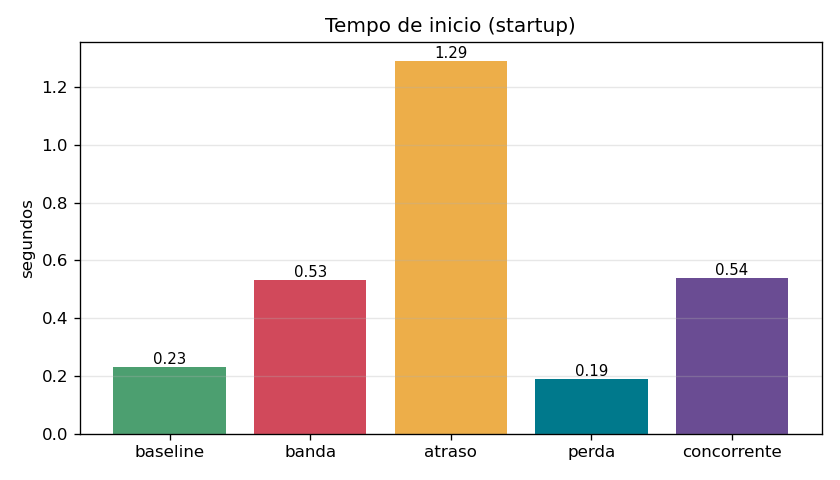
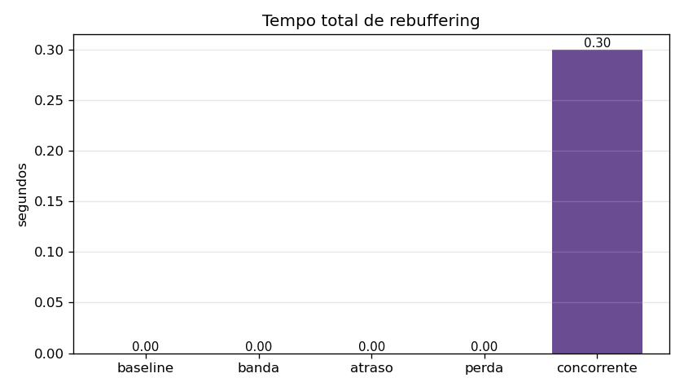
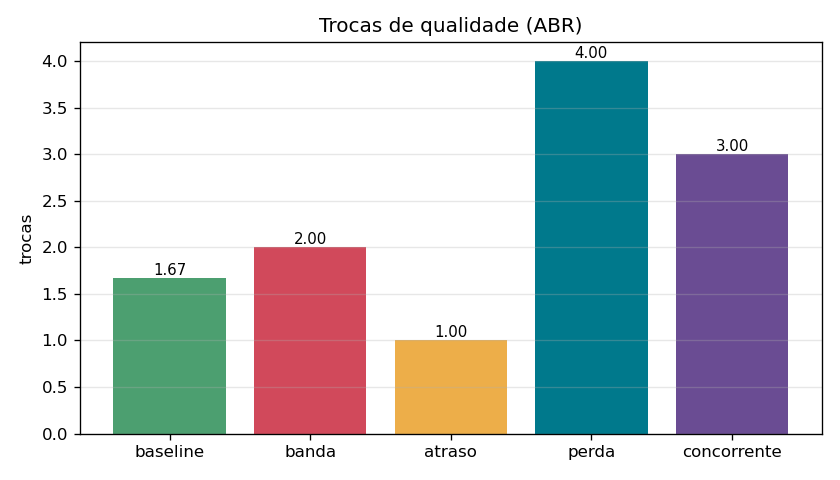
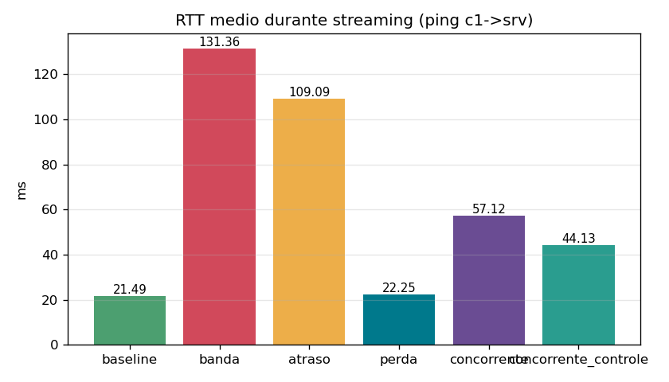
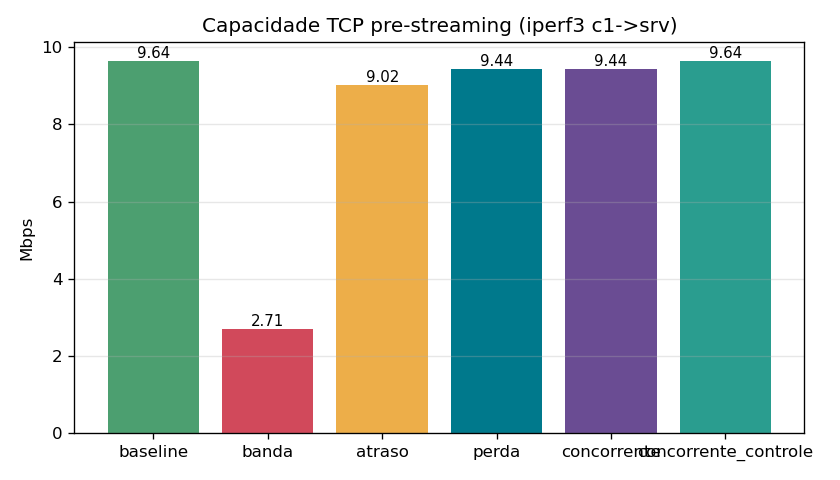

Projeto Final de Programabilidade de Redes — Etapas 1 e 2
Repositório com código e instruções de reprodução:
https://github.com/Lleooli/qoe-streaming-sdn
Este relatório cobre as duas primeiras etapas do projeto: a construção do ambiente experimental de streaming de vídeo sobre rede emulada (Etapa 1) e a indução controlada de degradação com caracterização do seu efeito na Qualidade de Experiência (Etapa 2). O ambiente servirá de base para o mecanismo de detecção e mitigação via SDN previsto na Etapa 3.
| Componente | Escolha | Justificativa |
|---|---|---|
| Emulador | Mininet 2.3 + Open vSwitch (Ubuntu 24.04/WSL2) | requisito do projeto |
| Controlador SDN | os-ken 2.8.1 (OpenFlow 1.3) | fork mantido do Ryu, com a mesma API; o Ryu original não executa em Python ≥ 3.10 |
| Streaming | MPEG-DASH (ffmpeg) + servidor HTTP em Python | mesmo pipeline do trabalho de sala (DASH + VLC) |
| Cliente | cliente DASH próprio em Python, com ABR | o VLC não expõe métricas de QoE de forma programática; o cliente próprio registra startup, stalls, bitrate e trocas em JSON |
| Métricas de rede | ping e iperf3 | requisito do projeto |
| Automação | Makefile + API Python do Mininet | execução reproduzível com um comando |
srv ──┐ ┌── c1
├── s1 ═══════════ s2 ─┼── c2
txg ──┘ (gargalo 10M) ├── c3
└── rxg
| Nó | IP | Papel |
|---|---|---|
| srv | 10.0.0.1 | servidor DASH (HTTP, porta 8080) |
| txg | 10.0.0.2 | gerador de tráfego concorrente (iperf3) |
| c1–c3 | 10.0.0.11–13 | clientes de vídeo instrumentados |
| rxg | 10.0.0.14 | receptor do tráfego concorrente |
| s1, s2 | — | switches OpenFlow 1.3 com controlador remoto |
Os links de borda têm 100 Mbps; o link s1↔s2 é o gargalo de 10 Mbps, onde a degradação é induzida. O vídeo (60 s, conteúdo real) é codificado em três representações — 426×240 a 300 kbps, 640×360 a 800 kbps e 1280×720 a 2400 kbps — com segmentos de 2 s. No pior caso os três clientes consomem 7,2 Mbps, abaixo do gargalo, de modo que o baseline comporta todos na qualidade máxima.
O controlador implementa um learning switch L2 com regras reativas por (porta de entrada, MAC de destino) e coleta estatísticas das portas a cada 5 s — telemetria que alimentará a lógica de detecção da Etapa 3.
| Métrica de rede | Valor |
|---|---|
| pingAll (conectividade) | 0% de perda (30/30) |
| RTT pré-streaming c1→srv | 0,097 ms |
| Capacidade TCP (iperf3, 5 s) | 9,64 Mbps |
| RTT durante o streaming | 21,5 ms |
| Perda ICMP durante o streaming | 0% |
| Cliente | Startup (s) | Stalls | Bitrate médio (kbps) | Trocas | Segmentos |
|---|---|---|---|---|---|
| c1 | 0,264 | 0 | 2330 | 1 | 30/30 |
| c2 | 0,197 | 0 | 2330 | 1 | 30/30 |
| c3 | 0,232 | 0 | 2063 | 3 | 30/30 |
O streaming é estável: nenhum rebuffering, startup abaixo de 0,3 s e os três clientes convergindo para 720p (o bitrate médio fica pouco abaixo de 2400 kbps apenas porque o primeiro segmento é baixado em 240p, por conservadorismo do algoritmo adaptativo). O critério da etapa — medições iniciais sem degradação significativa — foi atendido.
Quatro cenários adversos foram aplicados ao gargalo s1↔s2 por meio de
disciplinas de fila do tc (htb/netem) e geração de tráfego com
iperf3, mantendo o restante do ambiente idêntico ao baseline:
| Cenário | Indução | Parâmetros |
|---|---|---|
| baseline | — | gargalo de 10 Mbps |
| banda | tc/htb | gargalo reduzido a 3 Mbps |
| atraso | tc/netem | 50 ms ± 20 ms por sentido (RTT ≈ 100 ms) |
| perda | tc/netem | 3% de perda de pacotes |
| concorrente | iperf3 | fluxo UDP de 8 Mbps (txg→rxg) no gargalo |
Tempo de início (startup): primeira impressão do usuário; sensível ao RTT, pois o cliente paga vários tempos de ida e volta (conexão TCP, manifesto, inicialização, primeiro segmento) antes de exibir o primeiro quadro. Stalls (número e duração): a métrica de maior impacto percebido — a reprodução congela quando o buffer esvazia. Bitrate médio reproduzido: qualidade visual efetivamente entregue, resposta direta do ABR à banda disponível. Trocas de qualidade: oscilações frequentes incomodam mesmo sem congelamento, e indicam instabilidade na estimativa de banda. Do lado da rede, RTT, perda e vazão TCP foram medidos antes e durante cada sessão para permitir a correlação causa–efeito.
| cenário | startup (s) | stalls | t. parado (s) | bitrate (kbps) | trocas | RTT durante (ms) | perda ICMP (%) | iperf3 (Mbps) |
|---|---|---|---|---|---|---|---|---|
| baseline | 0,23 | 0 | 0 | 2241 | 1,7 | 21,5 | 0 | 9,64 |
| banda | 0,53 | 0 | 0 | 611 | 2,0 | 131,4 | 0 | 2,71 |
| atraso | 1,29 | 0 | 0 | 783 | 1,0 | 109,1 | 0 | 9,02 |
| perda | 0,19 | 0 | 0 | 1698 | 4,0 | 22,3 | 2,06 | 9,44 |
| concorrente | 0,54 | 0,33 | 0,30 | 436 | 3,0 | 57,1 | 0 | 9,44 |







Todos os cenários adversos degradaram ao menos uma métrica de QoE em relação ao baseline, com assinaturas distintas:
Banda (3 Mbps). A capacidade medida caiu para 2,7 Mbps; divididos entre três clientes, restam cerca de 0,9 Mbps por sessão, e o ABR estabiliza entre 300 e 800 kbps (média de 611 kbps, queda de 73%). O RTT durante o streaming sobe para 131 ms por efeito de fila no gargalo. Não há stalls: o algoritmo adaptativo sacrifica qualidade para proteger o buffer, que é o comportamento esperado do DASH.
Atraso (RTT ≈ 100 ms). A capacidade fica quase intacta (9 Mbps), mas o startup quintuplica (0,23 s → 1,29 s), já que cada etapa inicial paga o RTT cheio. O bitrate médio também cai (783 kbps): com segmentos de apenas 2 s, o tempo ocioso de requisição reduz o throughput percebido pelo estimador — limitação conhecida de ABR baseado em throughput sob RTT alto.
Perda (3%). O TCP retransmite e a vazão por segmento fica errática. O resultado não é queda uniforme, e sim instabilidade: média de 4 trocas de qualidade por cliente (um deles fez 7), com bitrate médio 24% menor. A perda ICMP medida durante a sessão foi de 2,06%, coerente com os 3% nominais.
Concorrente (UDP 8 Mbps). Pior caso global. O fluxo UDP não tem controle de congestionamento e ocupa cerca de 80% do gargalo; sobram ~2 Mbps para os três clientes. O bitrate médio despenca para 436 kbps (−81%) e surge o único episódio de rebuffering do experimento (1 stall de 0,9 s). O RTT quase triplica pela fila permanentemente ocupada.
| Métrica de rede degradada | Efeito dominante na QoE |
|---|---|
| ↓ banda disponível | ↓ bitrate; risco de stall quando a vazão fica abaixo do bitrate mínimo |
| ↑ RTT | ↑ startup; ↓ bitrate (estimador de throughput penalizado) |
| ↑ perda | ↑ trocas de qualidade (instabilidade); ↓ bitrate |
| tráfego concorrente UDP | combinação: ↓ bitrate, ↑ RTT e stalls |
Para a Etapa 3, o cenário concorrente é o alvo natural da mitigação: é o de pior QoE e o mais tratável por regras OpenFlow (priorização do tráfego de vídeo ou limitação do fluxo concorrente), usando a telemetria de portas que o controlador já coleta.
qoe-streaming-sdn/ ├── Makefile automação (setup, video, baseline, cenarios, plots) ├── README.md visão geral e instruções ├── controller/ │ └── qoe_controller.py controlador SDN (os-ken, OF 1.3 + telemetria) ├── topology/ │ └── qoe_topo.py topologia para uso interativo (mn --custom) ├── video/ │ └── generate_video.sh codificação DASH (3 qualidades, segmentos de 2 s) ├── streaming/ │ ├── dash_server.py servidor HTTP do conteúdo │ └── dash_client.py cliente DASH com ABR e métricas de QoE ├── scripts/ │ ├── check_env.sh verificação do ambiente │ ├── run_experiment.py orquestrador dos cenários (API do Mininet) │ ├── run_all.sh executa todos os cenários adversos │ └── plot_results.py gráficos e tabela consolidada ├── results/ │ ├── <cenário>/ qoe_c*.json, ping, iperf por cenário │ └── plots/ figuras e summary.csv └── relatorio/ relatórios das etapas (markdown e PDF)
git clone https://github.com/Lleooli/qoe-streaming-sdn cd qoe-streaming-sdn sudo make setup # instala mininet, openvswitch, iperf3, ffmpeg, os-ken make video # gera o conteúdo DASH a partir de um vídeo fonte sudo make baseline # Etapa 1 sudo make cenarios # Etapa 2 (banda, atraso, perda, concorrente) make plots # figuras em results/plots/
Ambiente testado: Ubuntu 24.04 (WSL2), Python 3.12, Mininet 2.3, Open vSwitch 3.3, os-ken 2.8.1, ffmpeg 6.1, iperf3 3.16.
Durante o desenvolvimento deste trabalho foram utilizadas ferramentas de inteligência artificial generativa como apoio na estruturação do projeto (organização de diretórios, scripts de automação e esqueleto do relatório) e na análise dos resultados (interpretação das correlações entre métricas de rede e de QoE). A definição da topologia, a escolha dos cenários e das métricas, a execução dos experimentos, a validação dos resultados e as conclusões apresentadas são de responsabilidade do autor, que revisou todo o conteúdo gerado com auxílio dessas ferramentas.